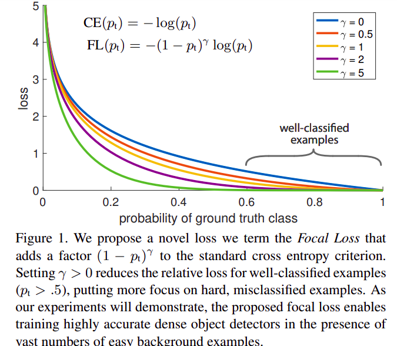
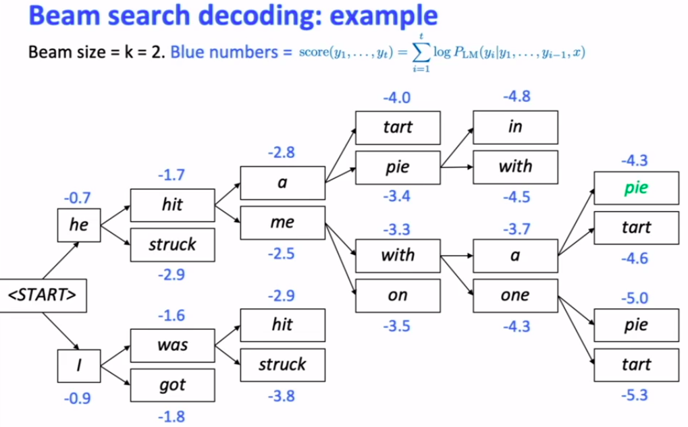

各种machine learning工程上会遇到的问题及解决方案收集
提纲
1. Focal loss
1.1 原理
出自CVPR 2017何凯明大佬的Focal Loss for Dense Object Detection，虽然原论文是做object detection任务的，但由于其适用性极强效果也很好，被广泛应用在包括NLP/推荐等各种领域中

何凯明大佬认为object detection数据集中各类之间的正负样本数量是不均衡的，在梯度反向传播的过程中，正样本提供的有效梯度信息会被淹没在大量无意义的负样本中，focal loss可以定义为
直观上理解，一般如果是用交叉熵损失的话，负样本比例越大，模型越会倾向于输出接近0的概率值，而数据集中的负样本比例越多，则整体focal loss的数值也就越大；focal loss可以放大hard positive samples，而negative samples的损失会被衰减
- 如何理解$\gamma$：$\gamma$被称为focusing factor，$\gamma=0$时该loss等价于交叉熵损失；字面意义上，$\gamma$越大，则损失函数会越倾向于衰减易分类样本的权重，从而使得模型在分类中更加倾向于难分类的样本；$\gamma$值不宜过大，如果模型在训练初期的输出概率普遍接近0.5，那么$(1-p_{t})$会很快被衰减到接近于0
- 如何理解$\alpha$：论文里被称作weighting factor，其实给正负样本的loss分别加权重应该是一个很容易想到的idea，以前也确实有很多人这样做过，仅仅对正负样本乘以不同weight的方法在这种文章中作为对比的baseline
实验结果表明，在object detection任务上效果最好的超参组合是$\gamma=2, \alpha=0.25$，一般其他任务会设置$\alpha=0.5$
tf2.x时代的代码实现见tf-addon的github代码库，写的还是挺清爽的，可以直接copy过来用，几个小的地方稍微改动下即可
1.2. 实验结果
在这个数据不能讲上跑了一波实验，数据集中negative占比83%左右，总共跑了4组参数对比
- Baseline: cross entropy loss
- Focal A: $\alpha=0.5, \gamma=2.0$
- Focal B: $\alpha=0.8, \gamma=2.0$
- Focal C: $\alpha=0.8, \gamma=4.0$
同时观测测试集上的ACC、AUC、recall以及precision几个指标，决策边界与其他超参数全部采用tf.keras给定的默认值，每2000步在测试集上evaluate一次，计算各个评价指标的running average，现象总结如下：
- Baseline的recall和precision都是最低的，AUC可以达到接近其他组的结果
- Focal A的precision最高，Focal BC两组的recall相比A明显提升，但precision和AUC有所下降
- Focal C组的recall是四组实验中最高的，同时AUC也是四组中最低的
在负样本远多于正样本的情况下，得到以下几个结论：
- 相比传统的交叉熵损失，focal可以同时提升recall和precision，这说明focal确实有助于模型对hard positive的训练
- 提升gamma和alpha都可以提升模型的recall，但也同时会降低模型的precision，过大的gamma参数会降低模型的AUC
- 四组实验综合来看，$\gamma=2.0, \alpha=0.8$的参数组合可以较好地平衡各个评价指标
2. Sequential data processing
Everyone knows the facts: Sequential data最常见的是自然语言和时间序列，DL时代一般处理sequential data的常规工具包括LSTM与GRU，GRU可以看做是LSTM的简化版本，现有实验研究的数据表明绝大多数LSTM与GRU的效果差不多
2.1. How to deal with large vocabulary size?
NLP任务中的vocabulary size一般都会很大，比如腾讯AILab放出来的预训练中文word embedding中总共有八百万个中文单词，类似的情况也可能会在其他的一些任务场景下遇到，在模型的输出端对整个vocabulary做softmax会带来两个问题
- softmax计算会非常耗时，绝大多数的计算都浪费在为无意义的稀疏的logits做exponential，其实可能超过99%的logits的值都不会对最后softmax小数点五位以内的结果有任何影响
- 训练效率低，上文focal loss的应用场景中也有这个问题，正样本的有意义梯度被淹没在大量的无意义的负样本梯度中
NLP中通用的两种解决方式：
- Hierachical Softmax: 简而言之将softmax最后一层的结果建成一颗二叉树（AVL/红黑树）便于查找，但无法写成支持GPU并行计算的算子，因而实际效率仍然不高
- Noise Contrastive Estimation: 这个trick在word2vec里也有用到，核心思想是随机采样K个负样本来近似softmax的结果，通常K远小于softmax的总大小，Soph et al, 2016提出的方法可以将NCE并行化，实现为高效的GPU算子，这点要强于hierachical softmax
两种方法的共同缺点：只能节省training中softmax的计算量，无法用于testing phase中的softmax计算
2.2. seq2seq
techical detail 1: beam search
NMT任务中，RNN输出的是一组单词的概率值 $p(y_1|x), p(y_2|y_{1}, x), …, p(y_n, y_{1}, …, y_{n-1}, x)$，我们希望得到一组$y_1, …, y_n$使得$\prod_{i}p(y_{i}|y_{1},…,y_{i-1},x)$最大，i.e.,
这个maximization是一个典型的NP-complete问题，目前NLP里比较通用的做法是beam search，which is a type of heuristic search that doesn’t guarantee to find the optimal.
Core idea: on each step of the decoder, keep track of the K-most probable transitions

techincal detail 2: attention implementation
3. Distributed Training with horovod
3.1. Introduction
horovod是uber发布的一个分布式深度学习训练框架（github repository link here!），其motivation来源于两篇文章：
- Facebook: Accurate, Large Minibatch SGD: Training ImageNet in 1 Hour，主要思路是多GPU输入不同的数据batch，各个GPU梯度求平均，最后broadcast到各个GPU显存中更新模型参数
- Baidu: Bringing HPC Techniques to Deep Learning，这篇文章重点考虑了多机多卡之间broadcast梯度的方式，即后来大名鼎鼎的ring-allreduce，后来ByteDance AILab貌似也是对broadcasting这一点做了一些改进
插两句废话，其实horovod不算是什么新技术，遥想本渣渣研二的时候还研究过一番tensorflow 1.x的分布式训练框架，当时最大的感受就是概念极其繁多，从
tf.Server到tf.train.SyncReplicasOptimizer再到tf.Supervisor，每一个类都会让人莫名其妙这又是什么鬼东西，作为最早将mapreduce落地应用到商业领域的公司，Google在分布式计算方面拥有领跑全球的技术不假，但他们似乎并没有兴趣仔细打磨分布式训练应用层的用户体验

horovod的官方文档还是比较友好的：
3.2. tf-2.x+hvd应用案例
1 | import tensorflow as tf |
几个需要注意的细节：
- 采用N个GPU进行分布式训练时，所有设备上的梯度最终要allreduce去求平均，实际上的
batch_size相当于变成了每个device上batch_size的N倍，相对应地，理论上梯度的方差，a.k.a Fisher information，会变成原来的1/N，所以设定learning rate的时候可以把单设备上的lr乘以hvd.size()； - 然而，facebook那篇文章中的实验表示这样做的效果并不好，原因也很容易想到，SGD中梯度的噪声分布本来是各向异性的，当你reduce了噪声，也就加大了模型收敛到bad optima的可能性，因此需要在callback中加入
LearningRateWarmupCallback； - 我在公司实习期间曾多次遇到程序在运行tensorboard callback时挂起的问题，github上也有很多人提了类似的issue，比如horovod issues #742、horovod issues #938以及horovod hang on with TensorBoard #297，这里暗坑很多，建议自己把
train_step写成tf.function，在函数自己定义tensorboard记录
3.3. 运行
horovod的程序可以用openmpi或horovodrun二者之一运行，前者能够达到fine-grained control，而后者是前者的简单封装，能让你少写几个意味不明的参数；虽然官网文档中推荐使用后者，实际在公司还是用mpirun更多一些，下面的例子参考了官网文档: Run Horovod with Open MPI
单机四张卡运行：
1 | # The following two ways are equivalent |
四台机器，每台机器四张卡
1 | # The following two ways are equivalent |
NOTE: ${server}:${num_gpus} 这里填ip地址和对应那台机器上的GPU数量，更详细的参数设置见上面的链接
4. Model Deployment
tf-2.x并没有在模型部署上搞太多大新闻，tf-1.x部署的方法已经比较成熟了，只要能够正确地输出模型的pb文件，下一步可以选择转成ncnn或者tvm，也可以直接用google官方提供的方法部署
4.0. 模型导出
tf-2.x的模型存储相比tf-1.x有较大变化，凡是继承tf.keras.Model建立的模型，在导出模型是都需要将所有导出的计算函数（最典型的就是call）加tf.function修饰
1 | tf.saved_model.save(model, "file directory to be saved...") |
4.1. Docker
参考TF官方教程：Serve a Tensorflow model in 60 seconds，应该是最简单的一种部署方法了，经测试以下方法没有任何问题
1 | # Download the TensorFlow Serving Docker image and repo |
4.2. tensorflow-model-server
安装tensorflow-model-server，网上都会告诉你先配置apt-get的源地址1
2
3
4
5
6
7
8
9
10
11
12
13
14
15
16
17echo "deb [arch=amd64] http://storage.googleapis.com/tensorflow-serving-apt stable tensorflow-model-server tensorflow-model-server-universal" | sudo tee /etc/apt/sources.list.d/tensorflow-serving.list && \
curl https://storage.googleapis.com/tensorflow-serving-apt/tensorflow-serving.release.pub.gpg | sudo apt-key add -
# then install
sudo apt-get update && apt-get install tensorflow-model-server
# activate model-server
tensorflow_model_server \
--rest_api_port=${port} \
--model_name=${model_name} \
--model_base_path=${abs_model_path}
# example test case
tensorflow_model_server \
--rest_api_port=20020 \
--model_base_path=/tmp/fucking-awesome.pb \
--model_name=saved_model.pb
感觉上是挺简单的，但问题是第二步中的这个Google链接由于一些众所周知的原因在墙内访问速度奇慢无比，后连接校园网VPN下载，问题解决
注意tensorflow的serving是可以支持热更新模型的，只要在模型目录下更新版本号即可即可，例如原来的路径是${basedir}/saved-model/，该路径下建立文件夹${version_number_int}来存放pb文件，每次模型更新可以直接将模型放到文件夹下
tensorflow-model-server的参数说明见blog链接https://blog.51cto.com/aaronsa/2284396，有一点需要注意的是，如果server服务启动使用了参数--port，那么该服务会只接受grpc请求，而使用--rest_api_port的端口可以通过HTTP请求访问
4.3. ncnn
ncnn是本渣渣在公司期间用得最多的库，一言以蔽之，ncnn是一个轻量级的神经网络前向部署框架，只能用于前向传播计算，优点是在在移动端设备上benchmark性能明显高于其他baseline，缺点是支持的op数量较少，从全民pytorch或tf-2.x的2020年看来有点落后于时代
Update in June 10th, 2020: 之前在公司用过的升级版ncnn已经在github开源，现在的名字叫做TNN，看起来是腾讯优图那边的成果
好不好用等之后尝过鲜之后再做更新吧。。。
4.4. libtensorflow
NOTE: TensorFlow 2 尚不支持 libtensorflow，预计会在未来版本中提供相应支持。
5. 时序回归模型的数据格式问题
需求：这是一个时序回归模型经常会遇到的需求，一个文件夹下放着很多csv格式的训练/测试数据，每个csv文件代表一个完整的时间序列，一次sampling需要从完整的时间序列中取连续的k条样本作为一条样本，从N个csv文件中读取得到N条这样的时序样本构成一个batch
解决方案：以下代码由tf源码修改而来，主要修改了几个细节
- 调用
dataset.interleave的时候设置block_length=window_size以及cycle_length=batch_size，意为每次拿到batch_size个迭代器（如果没有的话就用CsvDataset打开文件得到迭代器），从每个迭代器中并行地取出window_size个元素 - 最终返回一个
OrderedDict和一个label，label只取每个sequence的最后一个元素 - 只在文件级别做shuffle
- tf自带的csv解析
column_defaults换成了pandas解析 - 默认使用多线程实现读取，默认调用
prefetch优化性能 - 具体读取过程见代码注释
1 | def create_dataset_from_file(csv_path, |